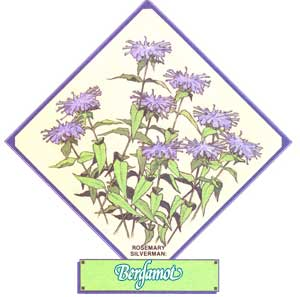
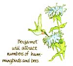

Lately, more and more people have begun to understand just how 'limited-in both variety and nutritional value-our"modern" diets have become. This realization has sparked a new and widespread interest in the culinary and therapeutic uses of herbs ... those plants which -although not well-known today-were, just one short generation ago, honored "guests" on the dinner tables and in the medicine chests of our grandparents' homes. In this regular feature, MOTHER examines the availability, cultivation, and benefits of our "forgotten" vegetable foods and remedies ... and-we hope-helps prevent the loss of still another bit of ancestral lore.
The house we bought in the Ad-irondacks; yielded many garden bonuses- including a lilac bush, some raspberries, rhubarb, and a grapevine-but my husband and I weren't able, at first, to identify a big stand of handsome purple flowers growing in the weedy, damp back yard.
Luckily for us, these "mystery" plants were wild bergamot (Monardo fistulosa), and they turned out to be our biggest bonus "crop" of all!
Even If the plant had nothing but Its beauty to recommend it, wild bergamot would still be worth growing. The narrow tubular flowers, which bloom from July through September, range from maroon to magenta to lilac In color ... and resemble a somewhat disheveled chrysanthemum atop a two-foot high, erect stalk.
Since the herb is a member of the mint family, it has its relatives' square, hollow stem ... shallow, dense root system ... and paired leaves, which are tinged with reddish-purple on their "under" surfaces.
The pretty plant-though not choosy as to where it grows -does prefer "wet feet" and partial shade. You should know, also, that growing bergamot from seed is a slow process, so it's best to start your crop with root cuttings. Simply divide the roots-at any time from early spring until late fall -remove any woody or blackened portions, and set the runners out 18 Inches apart.
In order to maintain a healthy stand of flowers, this resetting should be done every three years, but-if you feed your plants with compost In the fail-your "patch" can be left in the same spot (and will produce abundantly) for a good bit longer. Also, If you cut the plant back after the first bloom, It will produce an additional "harvest" during the same growing season. (You can purchase bergamot plants-in a variety of colors-from Well-Sweep Herb Farm, Dept. TMEN, 317 Mt. Bethel Road, Port Murray, New Jersey 07865. Send 50c for the firm's catalog.)
Apart from Its beauty, the aromatic herb functions as a drawing card for bees and hummingbirds and is a good companion plant for tomatoes. What's more, a leaf or two-tucked in a hat or pocket-will help repel pesky mosquitoes and gnats.
When harvested, bergamot is excellent for potpourri and dried flower arrangements ... makes a great garnish In wine cups and fruit punch ... adds zing to lemonade and apple jelly ... and can be used to flavor salads as well.
However, it's as a tea that the perennial excels, although-despite its membership in the mint family-the taste Is quite unlike that of Its commoner kin. (Both leaves and flowers can be used:
Just strip them from the stems and dry them in the warm shade for two or three days.)
The American Shakers reserved bergamot for colds and sore throats, and some herbalists claim that the herb acts as a sedative for "nervous complaints" and a tonic for depression.
During the American Revolution, bergamot tea was the most popular substitute for the unpatriotic English brew. However, the native American plant was exported to England in the mid17Ws, where it's still served under the name of "Gold Melissa". And, not long after my family and I discovered our free supply, we happened to buy a tin of expensive English breakfast tea ... only to open the lid and find ourselves assailed by a disturbingly familiar aroma: The costly brew consisted of bergamot mixed with black tea leaves!
Should the day come when we put our house up for sale, we'll be quick to point out to prospective buyers that they're getting a real "extra": no mere swimming pool, fireplace, or two car garage ... but a goodly stand of priceless bergamot!
|
 |
 |
|